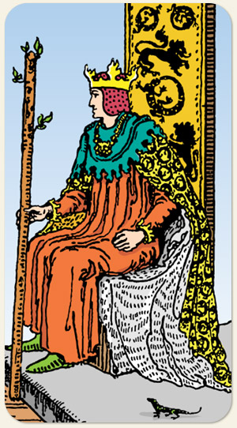

A liderança visionária, o empreendedorismo e a maestria sobre a vontade. O ápice do elemento Fogo indica um indivíduo que não apenas possui grandes ideias, mas tem a autoridade e a energia necessárias para transformá-las em realidade. É a carta do líder nato, do estrategista carismático e do pioneiro, marcando uma fase de autoconfiança absoluta, foco em resultados de longo prazo e a capacidade de inspirar lealdade através do exemplo.
Tem a expansão do fogo, avança com velocidade, é o próprio brilho, o próprio sol, fala também de pessoas estrangeiras, tem cultura, inteligência, sensualidade, é atlético, enérgico.
Positivo: Nobre valente, protetor, é admirado, é seguido por admiração, consegue captar pessoas para os seus propósitos em terras distantes, possui aliados estrangeiros, viajam para fazer esportes.
Negativo: Violência explícita, movimento sem nenhuma racionalidade, perder a dignidade, querer algo a qualquer custo, ambição desenfreada, só ele pode brilhar e não existe espaço para o brilho do outro. O rei luz se torna o rei trevas, competitividade doentia, estressado, fala de obsessores e manipuladores de energias negativas.
Símbolos: Trono, Coroa, Leão, Salamandra, Lagarto, Céu Límpido, Terreno Árido.
Cores: Vermelho, Laranjado, Amarelo, Verde, Azul, Cinza.
Referência: Rei Théoden (Senhor dos Anéis).